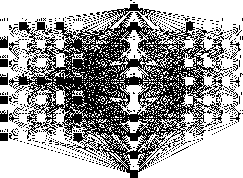
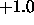
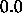
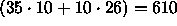

This paragraph describes a simple example network, a neural network classifier for capital letters in a 5x7 matrix, which is ready for use with the SNNS simulator. Note that this is a toy example which is not suitable for real character recognition.
The network in figure  is a feed-forward net
with three layers of units (two layers of weights) which can recognize
capital letters. The input is a 5x7 matrix, where one unit
is assigned to each pixel of the matrix. An activation of
is a feed-forward net
with three layers of units (two layers of weights) which can recognize
capital letters. The input is a 5x7 matrix, where one unit
is assigned to each pixel of the matrix. An activation of

corresponds to ``pixel set'', while an activation value of
corresponds to ``pixel not set''. The output of the network consists of exactly one unit for each capital letter of the alphabet.The following activation function and output function are used by default:
The net has one input layer (5x7 units), one hidden layer (10 units) and one output layer (26 units named 'A' ... 'Z'). The total of

connections form the distributed memory of the classifier.On presentation of a pattern that resembles the uppercase letter ``A'', the net produces as output a rating of which letters are probable.